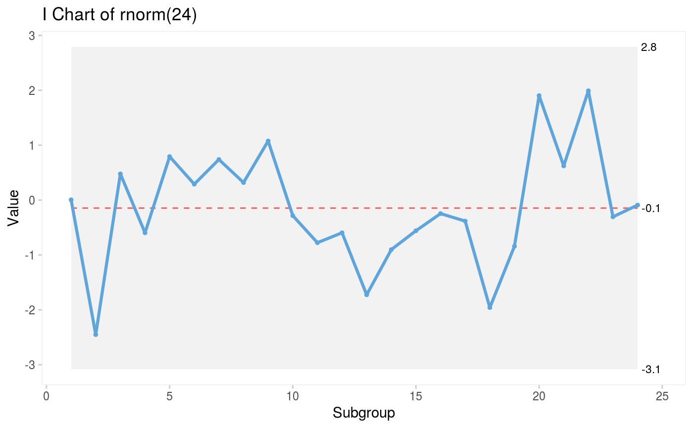

Prints summary of a qic object
# S3 method for qic summary(object, ...)
| object | A qic object. |
|---|---|
| ... | For compatibility with generic summary function. |
A data frame of summary values of each facet and part of a qic plot.
facet1 Vertical facets.
facet2 Horizontal facets
part Number of chart part when argument break.points is given.
aLCL Average of lower control limit.
CL Centre line.
aUCL Average of upper control limit.
longest.run Length of the longest run of data points on the same side of the centre line.
longest.run.max Upper limit of expected length of longest run.
n.crossings Number of times the data line crosses the centre line.
n.crossings.min Lower limit of expected number of crossings.
runs.signal 1 if either longest run or number of crossings are outside expected limits.
sigma.signal Number of data points outside control limits.
summary(p)#> facet1 facet2 part n.obs n.useful longest.run longest.run.max n.crossings #> 1 1 1 1 24 24 10 8 8 #> n.crossings.min runs.signal aLCL CL aUCL sigma.signal #> 1 8 1 -3.078101 -0.1460241 2.786053 0